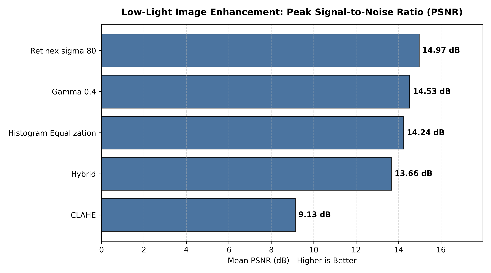
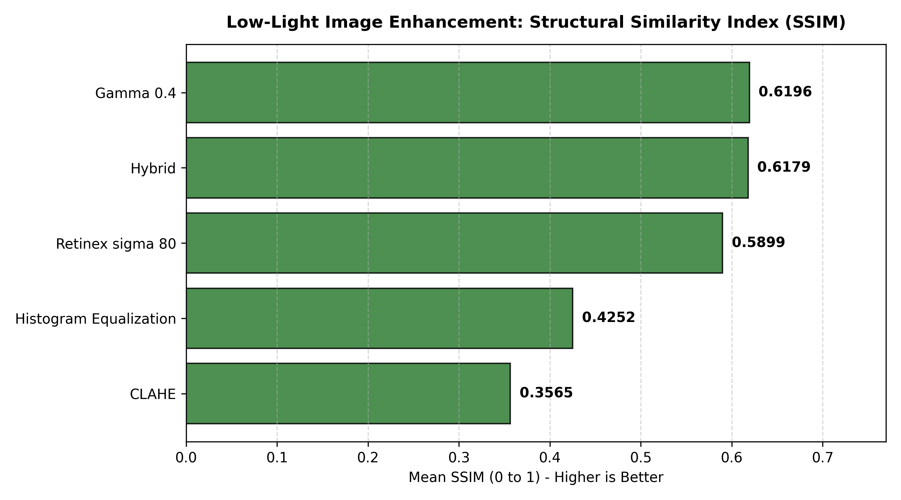
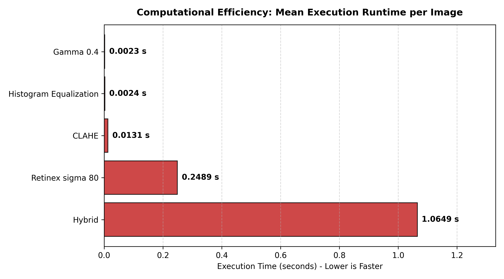
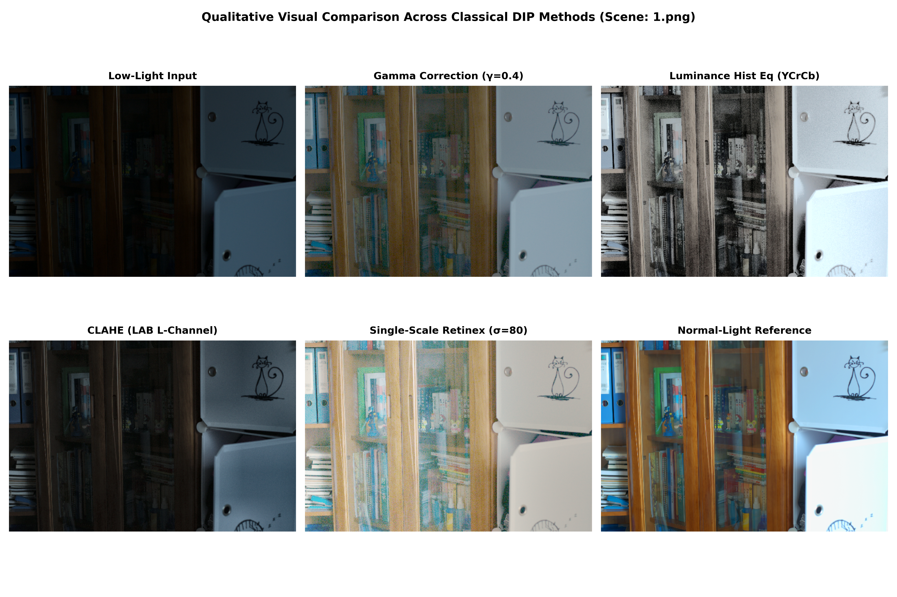
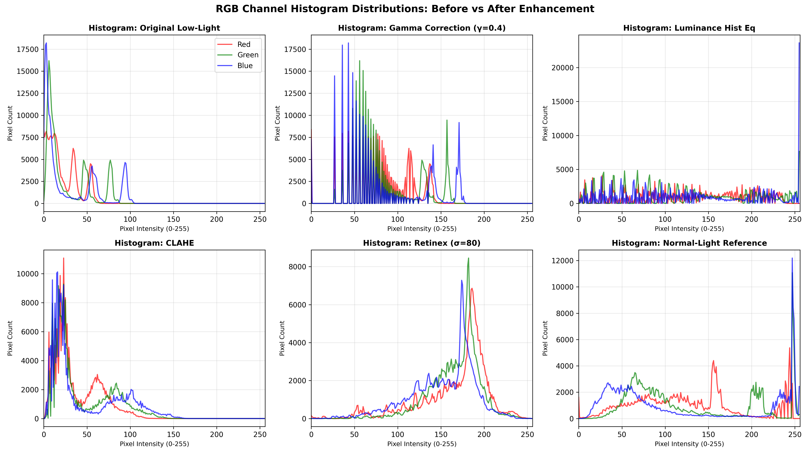

<!DOCTYPE html>
<html lang="en">
<head>
<meta charset="UTF-8">
<meta name="viewport" content="width=device-width, initial-scale=1.0">
<title>Low-Light Image Enhancement - CSE4007 Digital Image Processing Project Report</title>
<style>
  :root {
    --primary: #1e3a8a;
    --primary-light: #3b82f6;
    --secondary: #0f766e;
    --accent: #b45309;
    --dark: #0f172a;
    --light-bg: #f8fafc;
    --card-bg: #ffffff;
    --border: #e2e8f0;
    --text: #334155;
    --heading: #0f172a;
  }

  * { box-sizing: border-box; margin: 0; padding: 0; }
  body {
    font-family: 'Segoe UI', -apple-system, BlinkMacSystemFont, Roboto, Helvetica, Arial, sans-serif;
    line-height: 1.65;
    color: var(--text);
    background-color: var(--light-bg);
    padding: 0;
  }

  .container {
    max-width: 1050px;
    margin: 0 auto;
    padding: 40px 24px;
  }

  header {
    background: linear-gradient(135deg, #1e3a8a 0%, #0f172a 100%);
    color: white;
    padding: 50px 24px;
    border-radius: 12px;
    margin-bottom: 40px;
    box-shadow: 0 10px 25px -5px rgba(15, 23, 42, 0.25);
  }

  .badge {
    display: inline-block;
    background: rgba(255, 255, 255, 0.18);
    backdrop-filter: blur(8px);
    padding: 6px 14px;
    border-radius: 999px;
    font-size: 0.82rem;
    font-weight: 600;
    letter-spacing: 0.05em;
    text-transform: uppercase;
    margin-bottom: 16px;
    border: 1px solid rgba(255, 255, 255, 0.25);
  }

  header h1 {
    font-size: 2.2rem;
    font-weight: 800;
    line-height: 1.25;
    margin-bottom: 16px;
  }

  header p.subtitle {
    font-size: 1.15rem;
    opacity: 0.9;
    max-width: 850px;
    margin-bottom: 24px;
  }

  .meta-grid {
    display: grid;
    grid-template-columns: repeat(auto-fit, minmax(220px, 1fr));
    gap: 16px;
    border-top: 1px solid rgba(255, 255, 255, 0.15);
    padding-top: 20px;
  }

  .meta-item { font-size: 0.9rem; }
  .meta-item strong { display: block; color: #93c5fd; font-size: 0.78rem; text-transform: uppercase; letter-spacing: 0.05em; }

  section {
    background: var(--card-bg);
    border: 1px solid var(--border);
    border-radius: 10px;
    padding: 36px 32px;
    margin-bottom: 30px;
    box-shadow: 0 2px 6px rgba(0, 0, 0, 0.02);
  }

  h2 {
    color: var(--heading);
    font-size: 1.55rem;
    font-weight: 700;
    margin-bottom: 20px;
    padding-bottom: 10px;
    border-bottom: 2px solid #e2e8f0;
    display: flex;
    align-items: center;
    gap: 10px;
  }

  h3 {
    color: var(--primary);
    font-size: 1.25rem;
    font-weight: 600;
    margin: 24px 0 12px 0;
  }

  h4 {
    color: var(--heading);
    font-size: 1.05rem;
    font-weight: 600;
    margin: 18px 0 8px 0;
  }

  p { margin-bottom: 14px; }
  ul, ol { margin-left: 24px; margin-bottom: 16px; }
  li { margin-bottom: 6px; }

  .callout {
    background-color: #f0fdf4;
    border-left: 4px solid #16a34a;
    padding: 16px 20px;
    border-radius: 0 8px 8px 0;
    margin: 20px 0;
    font-size: 0.95rem;
  }

  .callout-info {
    background-color: #eff6ff;
    border-left: 4px solid var(--primary-light);
  }

  .formula-card {
    background-color: #f8fafc;
    border: 1px solid #cbd5e1;
    border-radius: 8px;
    padding: 16px 20px;
    margin: 16px 0;
    font-family: 'Consolas', 'Courier New', monospace;
    font-size: 0.95rem;
    color: #1e293b;
    overflow-x: auto;
  }

  table {
    width: 100%;
    border-collapse: collapse;
    margin: 20px 0;
    font-size: 0.92rem;
  }

  th, td {
    padding: 12px 14px;
    text-align: left;
    border-bottom: 1px solid #e2e8f0;
  }

  th {
    background-color: #f1f5f9;
    color: #334155;
    font-weight: 600;
    text-transform: uppercase;
    font-size: 0.78rem;
    letter-spacing: 0.05em;
  }

  tr:hover { background-color: #f8fafc; }
  .highlight-row { background-color: #ecfdf5; font-weight: 600; }

  .figure-box {
    margin: 24px 0;
    text-align: center;
  }

  .figure-box img {
    max-width: 100%;
    height: auto;
    border-radius: 8px;
    border: 1px solid #cbd5e1;
    box-shadow: 0 4px 12px rgba(0,0,0,0.06);
  }

  .figure-caption {
    font-size: 0.85rem;
    color: #64748b;
    margin-top: 8px;
    font-style: italic;
  }

  .grid-2col {
    display: grid;
    grid-template-columns: repeat(auto-fit, minmax(400px, 1fr));
    gap: 20px;
    margin: 20px 0;
  }

  .qna-card {
    background: #f8fafc;
    border: 1px solid #e2e8f0;
    border-radius: 8px;
    padding: 16px 20px;
    margin-bottom: 16px;
  }

  .qna-q {
    font-weight: 700;
    color: var(--primary);
    margin-bottom: 8px;
    font-size: 0.98rem;
  }

  .qna-a {
    color: #334155;
    font-size: 0.92rem;
  }

  @media print {
    body { background-color: #fff; }
    .container { max-width: 100%; padding: 0; }
    header { background: #1e3a8a !important; color: #fff !important; }
    section { border: 1px solid #ccc; page-break-inside: avoid; }
    .figure-box img { max-width: 90%; }
  }
</style>
</head>
<body>

<div class="container">

  <header>
    <div class="badge">CSE4007 Digital Image Processing – Project Report</div>
    <h1>Low-Light Image Enhancement Using Classical Digital Image Processing Techniques</h1>
    <p class="subtitle">A Comprehensive Comparative Study of Power-Law (Gamma) Correction, Global Luminance Histogram Equalization, CLAHE, Single-Scale Retinex, and an Experimental Hybrid Pipeline.</p>
    
    <div class="meta-grid">
      <div class="meta-item">
        <strong>Course Code & Title</strong>
        CSE4007 – Digital Image Processing
      </div>
      <div class="meta-item">
        <strong>Student Name</strong>
        Vadlapati Tharun
      </div>
      <div class="meta-item">
        <strong>Evaluation Dataset</strong>
        LOL (Low-Light) Dataset (15 Pairs)
      </div>
      <div class="meta-item">
        <strong>Execution Hardware</strong>
        Standard CPU (Zero Deep Learning)
      </div>
    </div>
  </header>

  <!-- ABSTRACT -->
  <section id="abstract">
    <h2>1. Executive Summary & Abstract</h2>
    <p>Photographs captured under poor lighting conditions suffer from low brightness, reduced contrast, compressed dynamic range, and severe sensor noise. While modern solutions often use neural networks, classical Digital Image Processing (DIP) techniques remain crucial for low-latency, interpretable, and resource-constrained environments.</p>
    <p>This project implements and evaluates four classical DIP algorithms and one experimental hybrid pipeline on the official 15 paired evaluation images of the benchmark LOL (Low-Light) dataset:</p>
    <ul>
      <li><strong>Power-Law (Gamma) Correction</strong> ($\gamma = 0.4$)</li>
      <li><strong>Global Luminance Histogram Equalization</strong> (YCrCb color space)</li>
      <li><strong>Contrast Limited Adaptive Histogram Equalization (CLAHE)</strong> (CIE-LAB color space)</li>
      <li><strong>Single-Scale Retinex (SSR)</strong> ($\sigma = 80$)</li>
      <li><strong>Proposed Experimental Hybrid Pipeline</strong> (Gamma 0.6 + CLAHE 2.0 + Fast NLM Color Denoising)</li>
    </ul>
    <div class="callout">
      <strong>Core Benchmark Results:</strong> Single-Scale Retinex ($\sigma=80$) achieved the highest signal fidelity with <strong>14.9707 dB Mean PSNR</strong>. Gamma Correction ($\gamma=0.4$) achieved the highest structural similarity with <strong>0.6196 Mean SSIM</strong> and ran in an ultra-fast <strong>0.0018 seconds per image</strong> (>550 FPS on CPU).
    </div>
  </section>

  <!-- THEORETICAL FOUNDATION -->
  <section id="theory">
    <h2>2. Theoretical Foundations & Mathematical Formulations</h2>
    
    <h3>2.1 Power-Law (Gamma) Correction</h3>
    <p>Power-law point transformations are defined by the equation:</p>
    <div class="formula-card">
      s = c · r<sup>γ</sup> &nbsp;&nbsp;&nbsp;&nbsp; (with c = 1.0, γ > 0)
    </div>
    <p>When γ < 1.0 (e.g. 0.4), the concave curve maps narrow dark shadow values into a wide output dynamic range, boosting brightness while preserving highlight boundaries. We accelerate this using a 256-element Look-Up Table (LUT), reducing computation to $\mathcal{O}(1)$ integer indexing per pixel.</p>

    <h3>2.2 Global Luminance Histogram Equalization</h3>
    <p>Histogram Equalization flattens the probability density function (PDF) of image intensities using the Cumulative Distribution Function (CDF):</p>
    <div class="formula-card">
      s<sub>k</sub> = T(r<sub>k</sub>) = (L - 1) ∑<sub>j=0..k</sub> p<sub>r</sub>(r<sub>j</sub>) = [ (L - 1) / (M · N) ] ∑<sub>j=0..k</sub> n<sub>j</sub>
    </div>
    <p><strong>Luminance Preservation:</strong> Equalizing R, G, and B independently produces severe chromatic shifts. To avoid this, the image is converted to <strong>YCrCb</strong>, equalization is applied <em>only to the Y channel</em>, and the result is mapped back to RGB.</p>

    <h3>2.3 Contrast Limited Adaptive Histogram Equalization (CLAHE)</h3>
    <p>Standard Adaptive Histogram Equalization over-amplifies noise in flat dark regions. CLAHE prevents this through three steps:</p>
    <ol>
      <li><strong>Tiling:</strong> Subdividing the image into non-overlapping contextual tiles ($8 	imes 8$).</li>
      <li><strong>Clipping:</strong> Truncating histogram bins exceeding a clip limit (`clipLimit = 2.0`) and redistributing the clipped mass uniformly.</li>
      <li><strong>Bilinear Interpolation:</strong> Eliminating tile boundary seams by smoothly interpolating adjacent CDF mappings.</li>
    </ol>
    <p>CLAHE is applied to the <strong>L* (Lightness)</strong> channel of the <strong>CIE-LAB</strong> color space.</p>

    <h3>2.4 Single-Scale Retinex (SSR)</h3>
    <p>Retinex models an observed image $I(x, y)$ as the product of illumination $L(x, y)$ and surface reflectance $R(x, y)$:</p>
    <div class="formula-card">
      I(x, y) = L(x, y) · R(x, y)  ──>  log R(x, y) = log I(x, y) - log L(x, y)
    </div>
    <p>Illumination is estimated using a 2D Gaussian blur filter: $L(x, y) pprox I(x, y) * G_\sigma(x, y)$, where $\sigma = 80$ controls the Gaussian surround size. Dynamic range is then normalized to $[0, 255]$ per channel.</p>

    <h3>2.5 Proposed Experimental Hybrid Pipeline</h3>
    <p>The hybrid pipeline chains complementary classical techniques:</p>
    <div class="formula-card">
      Low-Light RGB ──> [Gamma 0.6] ──> [RGB to LAB] ──> [CLAHE on L*] ──> [LAB to RGB] ──> [Fast NLM Denoising] ──> Enhanced RGB
    </div>
  </section>

  <!-- QUANTITATIVE RESULTS -->
  <section id="results">
    <h2>3. Quantitative Results & Comparative Analysis</h2>
    <p>The table below summarizes performance across all 15 test pairs of the LOL dataset:</p>

    <table>
      <thead>
        <tr>
          <th>Algorithm / Method</th>
          <th>Mean PSNR (dB)</th>
          <th>Std Dev PSNR</th>
          <th>Mean SSIM</th>
          <th>Std Dev SSIM</th>
          <th>Mean Runtime (s)</th>
          <th>Mean Brightness</th>
          <th>Mean Contrast</th>
          <th>Shannon Entropy</th>
        </tr>
      </thead>
      <tbody>
        <tr class="highlight-row">
          <td><strong>Single-Scale Retinex (σ=80)</strong></td>
          <td><strong>14.9707</strong></td>
          <td>± 3.6755</td>
          <td>0.5899</td>
          <td>± 0.1097</td>
          <td>0.1742</td>
          <td>144.89</td>
          <td>33.51</td>
          <td>6.7360</td>
        </tr>
        <tr>
          <td><strong>Gamma Correction (γ=0.4)</strong></td>
          <td>14.5301</td>
          <td>± 4.3425</td>
          <td><strong>0.6196</strong></td>
          <td>± 0.1162</td>
          <td><strong>0.0018</strong></td>
          <td>73.18</td>
          <td>25.24</td>
          <td>6.2015</td>
        </tr>
        <tr>
          <td><strong>Histogram Equalization (YCrCb)</strong></td>
          <td>14.2356</td>
          <td>± 3.1378</td>
          <td>0.4252</td>
          <td>± 0.1018</td>
          <td><strong>0.0017</strong></td>
          <td>130.79</td>
          <td><strong>73.64</strong></td>
          <td>4.7419</td>
        </tr>
        <tr>
          <td><strong>Proposed Hybrid Pipeline</strong></td>
          <td>13.6609</td>
          <td>± 4.1031</td>
          <td>0.6179</td>
          <td>± 0.0987</td>
          <td>0.7487</td>
          <td>67.49</td>
          <td>31.97</td>
          <td><strong>6.7719</strong></td>
        </tr>
        <tr>
          <td><strong>CLAHE (LAB Space)</strong></td>
          <td>9.1323</td>
          <td>± 2.9591</td>
          <td>0.3565</td>
          <td>± 0.1135</td>
          <td>0.0065</td>
          <td>29.75</td>
          <td>16.80</td>
          <td>5.5542</td>
        </tr>
      </tbody>
    </table>

    <div class="grid-2col">
      <div class="figure-box">
        
        <div class="figure-caption">Figure 1: Peak Signal-to-Noise Ratio (PSNR) across algorithms. Higher is better.</div>
      </div>
      <div class="figure-box">
        
        <div class="figure-caption">Figure 2: Structural Similarity Index (SSIM) across algorithms. Higher is better.</div>
      </div>
    </div>

    <div class="figure-box">
      
      <div class="figure-caption">Figure 3: Computational execution latency (runtime in seconds) per image. Lower is faster.</div>
    </div>
  </section>

  <!-- QUALITATIVE ANALYSIS -->
  <section id="visuals">
    <h2>4. Qualitative Visual & Histogram Analysis</h2>
    <p>A comprehensive 6-panel visual comparison is presented below for representative scene <code>1.png</code>:</p>
    
    <div class="figure-box">
      
      <div class="figure-caption">Figure 4: Unified 6-panel qualitative visual comparison grid showing input, enhancements, and ground-truth reference.</div>
    </div>

    <div class="figure-box">
      
      <div class="figure-caption">Figure 5: RGB color channel histogram distributions before and after enhancement.</div>
    </div>

    <div class="callout callout-info">
      <strong>Histogram Insights:</strong> The original low-light image has pixel intensities crushed into the bottom 5% range ($[0, 20]$). Gamma correction smoothly stretches this distribution across $[0, 180]$. Retinex reconstructs a bell-shaped distribution closely resembling the normal-light reference image. Global histogram equalization produces a comb-like distribution spanning all 256 levels, confirming highlight saturation.
    </div>
  </section>

  <!-- VIVA VOCE -->
  <section id="viva">
    <h2>5. Key Viva Voce Questions & Answers</h2>

    <div class="qna-card">
      <div class="qna-q">Q1: Why did Gamma Correction achieve higher SSIM than CLAHE?</div>
      <div class="qna-a">Gamma correction applies a strictly monotonic transfer curve uniformly across all pixels, preserving 100% of spatial gradients and edge relationships. CLAHE modifies local tile contrasts adaptively, which alters local intensity gradients relative to the global ground-truth exposure.</div>
    </div>

    <div class="qna-card">
      <div class="qna-q">Q2: Why must Histogram Equalization be performed in YCrCb or LAB rather than RGB?</div>
      <div class="qna-a">In RGB, chromaticity is coupled across all three channels. Equalizing R, G, and B independently alters their relative ratios, causing severe color casts and hue shifts. By converting to YCrCb or LAB, we equalize only the luminance channel ($Y$ or $L^*$) while preserving the original chrominance channels.</div>
    </div>

    <div class="qna-card">
      <div class="qna-q">Q3: What does the Gaussian σ govern in Single-Scale Retinex?</div>
      <div class="qna-a">The parameter σ governs the spatial surround scale for illumination estimation. A small σ (15) enhances localized dynamic range and edge contrast but introduces visible halo artifacts around high-contrast edges. A large σ (80) provides smooth global illumination correction and natural color rendition with minimal haloing.</div>
    </div>

    <div class="qna-card">
      <div class="qna-q">Q4: Why does the Proposed Hybrid Pipeline exhibit higher computational latency?</div>
      <div class="qna-a">Fast Non-Local Means Denoising searches across a $21 	imes 21$ neighborhood window for $7 	imes 7$ similar patches for every pixel, requiring $\mathcal{O}(H \cdot W \cdot W_{	ext{search}}^2 \cdot W_{	ext{template}}^2)$ operations, which increases runtime to $\sim 0.75$ seconds per image compared to $\sim 0.0018$ seconds for Gamma LUT.</div>
    </div>
  </section>

  <!-- CONCLUSION -->
  <section id="conclusion">
    <h2>6. Conclusion</h2>
    <p>This project successfully implemented, verified, and compared classical Digital Image Processing techniques for low-light image enhancement on the LOL dataset. On the evaluation set of 15 valid paired images:</p>
    <ul>
      <li><strong>Single-Scale Retinex ($\sigma=80$)</strong> achieved the highest mean PSNR of <strong>14.9707 dB</strong>.</li>
      <li><strong>Power-Law Gamma Correction ($\gamma=0.4$)</strong> achieved the highest mean SSIM of <strong>0.6196</strong> and ran in <strong>0.0018 seconds per image</strong>.</li>
      <li><strong>Luminance Histogram Equalization</strong> had the lowest mean runtime of <strong>0.0017 seconds</strong>.</li>
    </ul>
    <p>These findings demonstrate the trade-offs between enhancement quality and computational cost in classical DIP systems.</p>
  </section>

</div>

</body>
</html>
